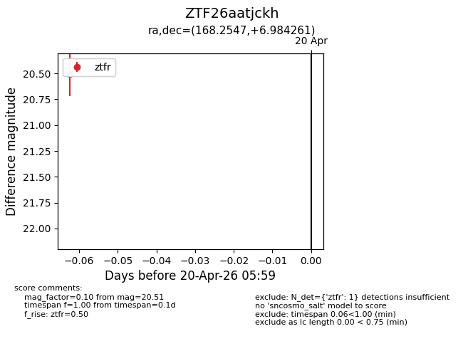
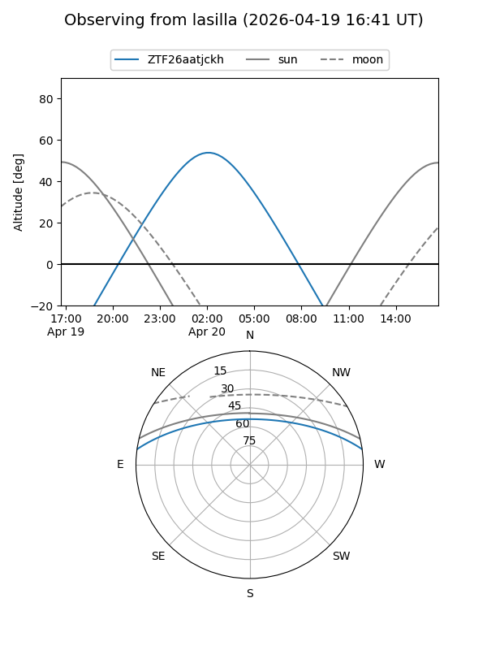
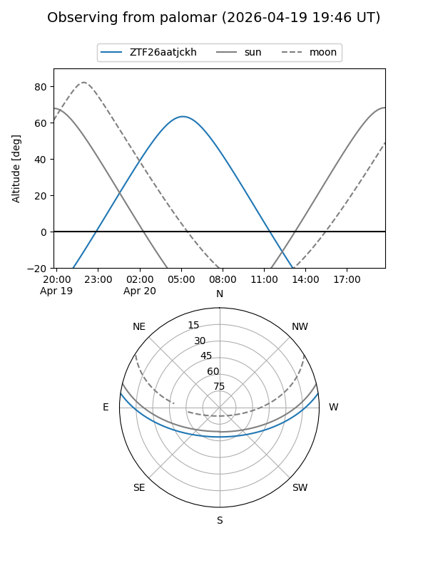

ZTF26aatjckh
Target ZTF26aatjckh at 2026-04-20 06:09
Aliases and brokers:
FINK: link
Lasair: link
ALeRCE: link
alt names
ZTF26aatjckh (ztf,fink_ztf)
Coordinates:
equatorial (ra, dec) = 168.2547,+6.98426
equatorial (HMS+DMS) = 11:13:01.14,+06:59:03.34
galactic (l, b) = (249.2059,+59.16203)
Flags:
Photometry:
last ztfr=20.51
1 ztfr detections
Lightcurve

Visibility


Additional plots